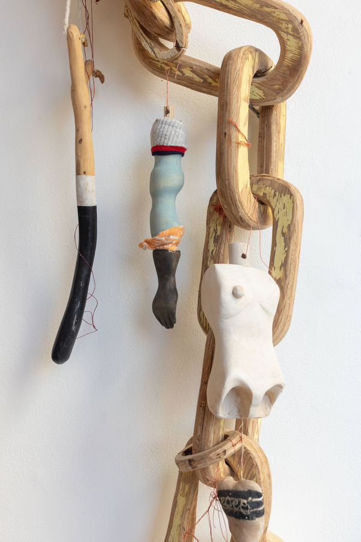

Salt, Vessels, and Tender Emissions
Opening Saturday, September 28, 4-6PM
Closing October 24, 6-8 PM
Beatriz Escobar, Judit Navratil and Ann Schnake
an overlapping installation of embodied works, sculpture, drawings and activations
We are interconnected amidst colonial-capital cacophony, seeking vibratory potentials and possibilities.
Salt as in pools and corners, as history as currency, vital life substance, spiritual cleanser. Vessels as in traveling channels, veins, kites, boats, entangled lines and as that which holds us. Emissions as ethereal messages of drawings, hands, and floating anchors for diasporic travels.
This three-artist exhibition is made of disparate parts - poetic floating devices, drawings and sculptural elements. Our similarity is that we search for reconnection, seeking vibratory potentials and possibilities, amidst colonial-capital cacophony. We are each an artist who activates group process, with interest in the instrumentalization of the art object.
Within this exhibition, we seek to create emissions as ethereal messages in drawings, hands, and floating anchors for diasporic travels. Beatriz does this with a floating practice, began in the warm bays in Brazil engaging in her grandmother's ritual of floating and which she now elaborates in salt baths and reading on the indeterminate as antidote to capitalism's solutionism. Judit draws blueprints of conversations, marking moments with loved ones across motherearth; she creates portals of connection, such as imagined kites as entry points to an ethereal communicative realm. Ann carves fragmented body parts, tools made strange to communicate our deterritorialized subjectivity and seeks the voice of the radical fem seers.
This exhibition marks a year in a DFC project of elaborating post continental world building and is the first in a series of exhibitions calling upon the inspiration of Lygia Clark, Suely Rolnik, Kali Ma and other radical feminist seers.
